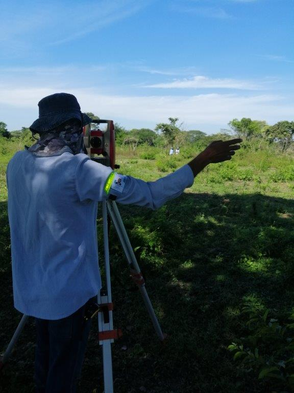
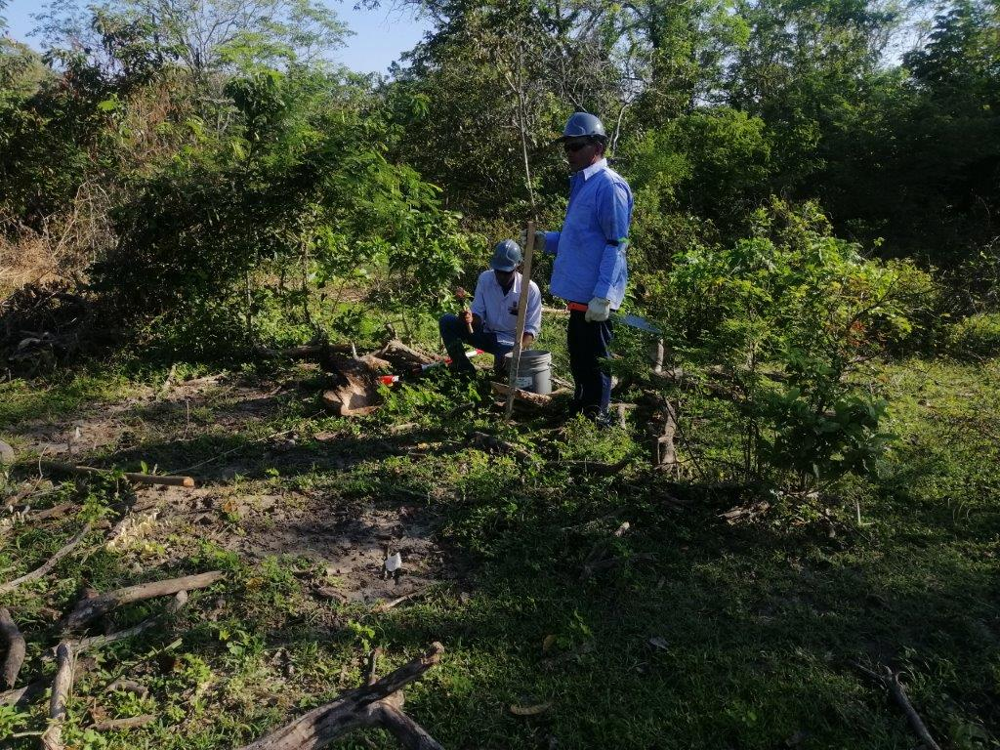

Servicios

Topografia
Levantamientos topográficos, nivelaciones, toma de asentamientos, alineamientos, perfiles de terreno, generación de curvas de nivel

Diseño de Facilidades/layout
Diseño de facilidades industriales, locaciones de extracción de petroleo y gas, establecimiento de taludes de corte y relleno, utilizando software especializado
Geotecnia
Verificación de las áreas en los aspectos geotécnicos, para diseño de cada una de las obras propuestas

Verificación Ambiental
Verificación ambiental en cada uno de los sitios donde se desarrollaran los proyectos, para verificar inconvenientes de construcción y como se pueden remediar